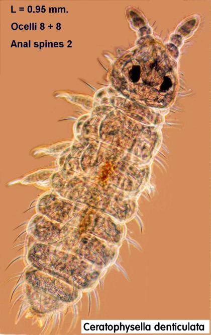

|
|
|
Springtail of the Month - 2 Family: Hypogastruridae Collection site: Two sources used - fruiting bodies of Inocybe sp. (Toadstool) and coniferous leaf litter from a site overlooking Lake Windermere. Identification key used: ?Fjellberg? This is a widespread species, mainly found in soil, coniferous leaf litter, fungal fruiting bodies and on the sea shore. There is some variability in the group and four phenotypes have been described, with minor differences on chaetotaxy (mapping of setae on body segments). Characteristics used in keying out to family, genus and species: Body elongated, 0.8 - 2.5 mm, segments distinctly separated, pigment variable with ventral side lighter. Ocelli - 8 + 8 (not clear in picture). Two anal spines. - about as long as claw 3. |
|  |
|
To continue this topic click here. |
|
• Welcome • The PMS • The Study Group • What are Springtails? • Collecting Techniques • Observation Techniques • Cultures • Identification • Springtails of the Month • Photo Gallery • Correspondence •Related Sites • E-mail • PMS Main Site • |